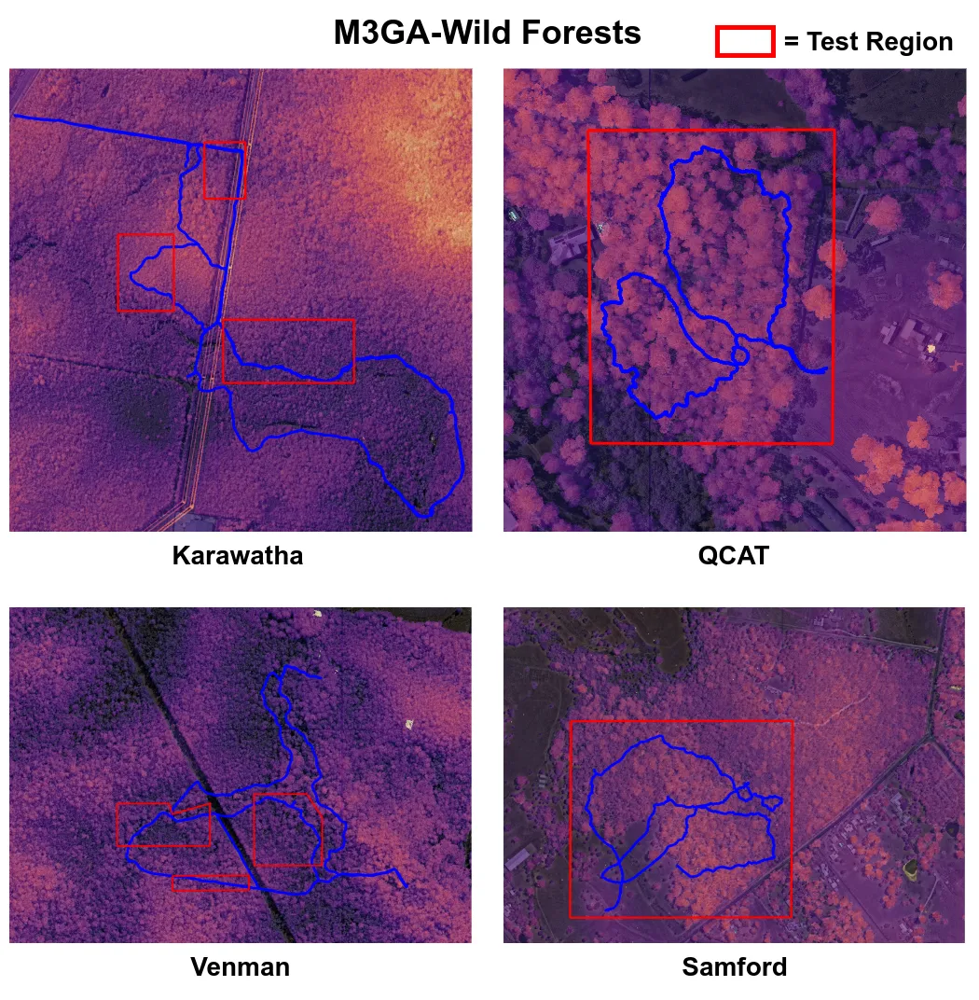
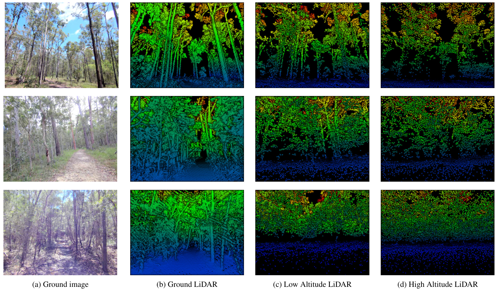
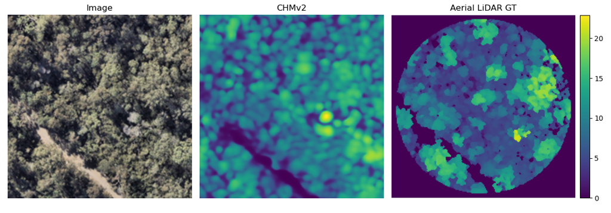
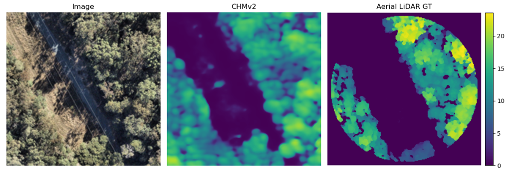
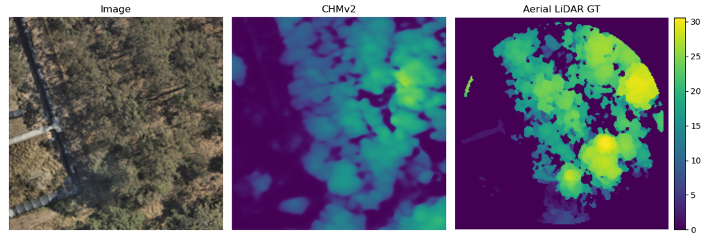
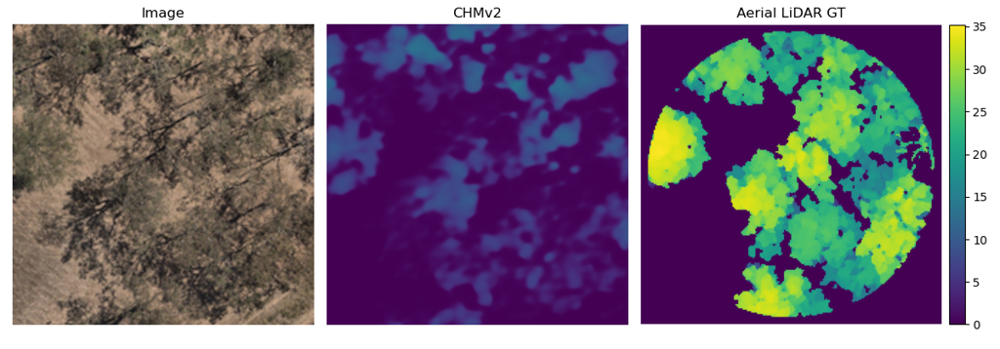

We present M3GA-Wild, the first benchmark for multi-modal, multi-session ground-to-aerial place recognition in forests. It unifies and extends existing forest localisation datasets, providing synchronised RGB imagery and LiDAR from ground traversals spanning 36 km, aligned high-resolution aerial imagery and multi-altitude LiDAR covering 370 hectares, and accurate geo-referenced 6-DoF poses across four forests in Brisbane, Australia. Baselines show that LiDAR-based approaches significantly outperform vision-only methods under severe viewpoint differences, while current multi-modal fusion strategies yield limited gains due to poor cross-modal alignment. Pairing aerial RGB with geo-referenced aerial LiDAR also lets us evaluate foundation models for monocular depth and canopy height estimation, revealing shortfalls of current methods.
M3GA-Wild combines ground LiDAR and RGB from WildCross with ground LiDAR and low altitude (LA) aerial LiDAR from CS-Wild-Places, across four eucalyptus forests near Brisbane, Australia. We add geo-referenced aerial RGB imagery (Nearmap, up to 7.5 cm GSD) aligned to the aerial LiDAR, a new high altitude (HA) LiDAR layer from public Queensland Government surveys, and derived height maps (ground LiDAR rasters and CHMv2 canopy heights predicted from aerial imagery). LA and HA LiDAR are captured 50–200 m and 800–2500 m above ground, respectively.
19.9 km ground, 1.80 km² aerial
Ground RGB + LiDAR; Aerial RGB + LiDAR
Disjoint Train/Test Split
12.7 km ground, 1.30 km² aerial
Ground RGB + LiDAR; Aerial RGB + LiDAR
Disjoint Train/Test Split
2.6 km ground, 0.58 km² aerial
Ground LiDAR; Aerial RGB + LiDAR
Unseen Test Forest
Aerial LA LiDAR uses RIEGL VUX-120 for higher density


Poor beam penetration in dense canopy makes ground-to-aerial matching hard; HA LiDAR has the lowest below-canopy density.




From top-to-bottom: Karawatha, Venman, QCAT, Samford. CHMv2 captures coarse canopy structure but fails on sparse forests.
| Dataset | Year | RGB | LiDAR | Ground | LA | HA | Environment | Scale (Ground / Aerial) |
|---|---|---|---|---|---|---|---|---|
| KITTI | 2013 | ✓ | ✓ | ✓ | ✗ | ✗ | Urban | 44 km |
| Oxford RobotCar | 2017 | ✓ | ✓ | ✓ | ✗ | ✗ | Urban | 1000 km |
| BotanicGarden | 2020 | ✓ | ✓ | ✓ | ✗ | ✗ | Outdoor | 17 km |
| MulRan | 2020 | ✗ | ✓ | ✓ | ✗ | ✗ | Urban | 123 km |
| Wild-Places | 2023 | ✗ | ✓ | ✓ | ✗ | ✗ | Forest | 33 km |
| MARS-LVIG | 2024 | ✓ | ✓ | ✗ | ✓ | ✗ | Urban / Outdoor | 1.2 km² |
| SubT-MRS | 2024 | ✓ | ✓ | ✓ | ✗ | ✗ | Sub-T / Various | 100 km |
| Oxford Forest PR | 2024 | ✗ | ✓ | ✓ | ✗ | ✗ | Forest | 3.4 km |
| WildCross | 2026 | ✓ | ✓ | ✓ | ✗ | ✗ | Forest | 33 km |
| CS-Campus3D | 2023 | ✗ | ✓ | ✓ | ✗ | ✓ | Urban / Campus | 7.8 km / 5.5 km² |
| GRACO | 2023 | ✓ | ✓ | ✓ | ✓ | ✗ | Campus | 3.0 km / 0.06 km² |
| CS-Wild-Places | 2025 | ✗ | ✓ | ✓ | ✓ | ✗ | Forest | 36.1 km / 3.7 km² |
| M3GA-Wild (Ours) | 2026 | ✓ | ✓ | ✓ | ✓ | ✓ | Forest | 36.1 km / 3.7 km² |
LA / HA = low / high altitude aerial LiDAR.
M3GA-Wild enables place recognition evaluation across diverse modality configurations. Ground samples are queries against the aerial database. We report mean Recall@1/5/10 (%), using LA LiDAR unless stated otherwise.
Recall@N of the best method per task on each forest. All results use low altitude LiDAR. VPR and MMPR methods need ground RGB, so they are only reported on Karawatha and Venman. Adding a DINOv2 image encoder to MinkLoc3Dv2 via simple concat fusion (MinkLoc++v2) is on par or better on Karawatha, but is worse than LiDAR-only MinkLoc3Dv2 at every N on Venman. CMPR uses a ResNet50 image encoder on Karawatha and Venman, and DINOv2 on QCAT and Samford; hover to see it. Click legend to toggle lines.
Accurate LiDAR geometry stays robust despite the severe domain gap, and transformer-based hierarchical encoders generalise best. HA LiDAR outperforms LA for most methods, providing a cheap and scalable alternative to costly and time-consuming drone-based LA LiDAR scans.
| Method | Re-ranker | LA R@1 | LA R@5 | LA R@10 | HA R@1 | HA R@5 | HA R@10 |
|---|---|---|---|---|---|---|---|
| MinkLoc3Dv2 | – | 48.5 | 67.9 | 76.4 | 61.3 | 76.1 | 81.1 |
| EgoNN | – | 48.3 | 71.4 | 80.6 | 66.5 | 81.1 | 85.8 |
| LoGG3D-Net | – | 21.9 | 35.7 | 42.5 | 29.0 | 46.3 | 54.3 |
| CrossLoc3D | – | 10.0 | 24.4 | 34.2 | – | – | – |
| HOTFormerLoc | – | 59.4 | 75.4 | 82.8 | 64.9 | 78.4 | 83.0 |
| HOTFLoc++ | – | 67.4 | 81.8 | 87.6 | 71.2 | 84.4 | 88.9 |
| EgoNN | SGV | 69.7 | 80.4 | 84.3 | 76.6 | 85.8 | 88.3 |
| LoGG3D-Net | SGV | 43.2 | 46.5 | 48.1 | 58.8 | 60.5 | 61.5 |
| HOTFLoc++ | MSGV | 88.0 | 91.2 | 92.0 | 88.4 | 90.9 | 91.9 |
Average over Karawatha, Venman, QCAT and Samford. Models trained on low altitude (LA) or high altitude (HA) LiDAR.
Even modern VPR methods and foundation-model features fail on ground-to-aerial retrieval, and fine-tuning gives only marginal gains.
| Setting | Method | R@1 | R@5 | R@10 |
|---|---|---|---|---|
| Zero-shot | NetVLAD | 0.33 | 1.12 | 2.09 |
| Zero-shot | MixVPR | 0.37 | 1.21 | 2.18 |
| Zero-shot | SALAD | 0.40 | 1.18 | 2.17 |
| Zero-shot | BoQ | 0.50 | 1.51 | 2.32 |
| Zero-shot | AnyLoc | 1.41 | 3.47 | 5.31 |
| Zero-shot | AnyLoc† | 0.43 | 2.07 | 3.88 |
| Fine-tuned | NetVLAD | 0.34 | 1.11 | 1.84 |
| Fine-tuned | MixVPR | 0.28 | 0.93 | 1.76 |
| Fine-tuned | SALAD | 0.63 | 1.91 | 3.66 |
| Fine-tuned | BoQ | 1.73 | 2.58 | 3.59 |
Average over Karawatha and Venman. † = “unstructured” AnyLoc domain.
3D geometry is the most reliable cue, but the best Lip-Loc configuration remains below 10% R@1. CHMv2 height maps do not yet replace true 3D geometry.
| Image encoder | Ground Modality | Aerial Modality | R@1 | R@5 | R@10 |
|---|---|---|---|---|---|
| ResNet50 | Range Image | RGB | 1.92 | 5.96 | 9.80 |
| DINOv2 | Range Image | RGB | 4.55 | 11.35 | 16.28 |
| DINOv3 | Range Image | RGB | 3.65 | 8.54 | 13.04 |
| ResNet50 | Height Map | RGB | 2.39 | 7.86 | 12.82 |
| DINOv2 | Height Map | RGB | 3.95 | 8.59 | 13.17 |
| DINOv3 | Height Map | RGB | 2.82 | 7.63 | 13.27 |
| ResNet50 | Height Map | CHMv2 | 3.42 | 11.33 | 15.94 |
| DINOv2 | Height Map | CHMv2 | 3.31 | 9.15 | 13.09 |
| DINOv3 | Height Map | CHMv2 | 5.03 | 12.61 | 16.79 |
| ResNet50 | LiDAR | RGB | 4.66 | 12.58 | 18.65 |
| DINOv2 | LiDAR | RGB | 7.27 | 14.90 | 21.03 |
| DINOv3 | LiDAR | RGB | 4.60 | 12.38 | 17.82 |
Lip-Loc, average over all four forests. The LiDAR rows use a HOTFormerLoc LiDAR encoder.
Fusing RGB and LiDAR improves over image-only retrieval, but LiDAR-only methods remain stronger, so current fusion is not adaptive enough to exploit RGB when it helps and ignore it when it distracts.
| Method | R@1 | R@5 | R@10 |
|---|---|---|---|
| MinkLoc++ (ResNet18) | 29.2 | 49.7 | 60.7 |
| MinkLoc++v2 (ResNet50) | 43.0 | 65.2 | 74.2 |
| MinkLoc++v2 (DINOv2) | 47.8 | 72.7 | 81.9 |
| UMF (ResNet50) | 18.8 | 36.3 | 46.6 |
Average over Karawatha and Venman.
Beyond benchmarking, the high altitude (HA) LiDAR layer of M3GA-Wild points to a scalable source of 3D supervision. HA LiDAR covers large areas in a single flight and is publicly available for large regions (ours comes from Queensland Government surveys), so it is far cheaper to acquire than drone-based LA LiDAR. Despite its lower point density and canopy penetration, it gave better LPR results than LA LiDAR for most methods. Every HA submap is also paired with geo-referenced aerial RGB, so aligned image–geometry data can be gathered at scale without any ground survey.
We see two directions this could enable, both still open:
M3GA-Wild paper · GitHub repository (code, benchmarks, data loaders) · Dataset download (CSIRO Data Access Portal) · Hugging Face checkpoints · WildCross
@inproceedings{GriffithsM3GAWild2027,
title = {{M3GA-Wild}: A Large-Scale Dataset and Benchmark for Multi-Modal Multi-session Ground-to-Aerial Place Recognition in Forests},
author = {Griffiths, Ethan and Haghighat, Maryam and Denman, Simon and Fookes, Clinton and Ramezani, Milad},
booktitle = {Proceedings of the IEEE/CVF Winter Conference on Applications of Computer Vision (WACV)},
pages = {},
year = {2027},
}